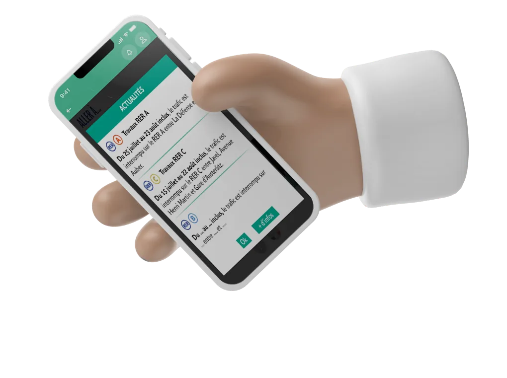
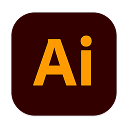
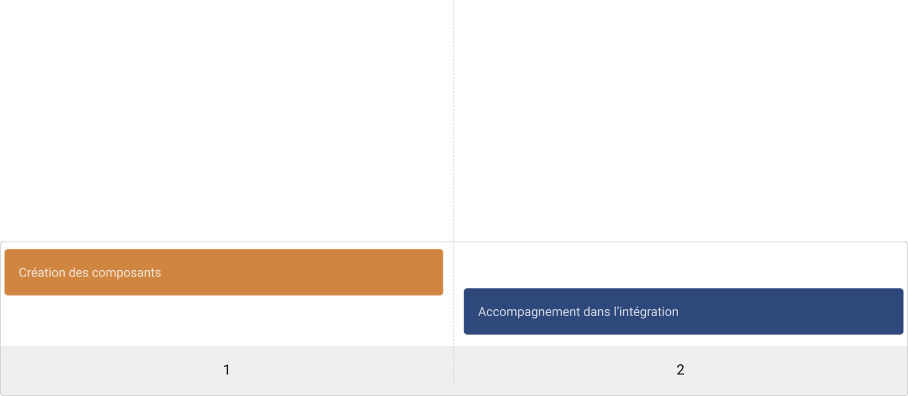
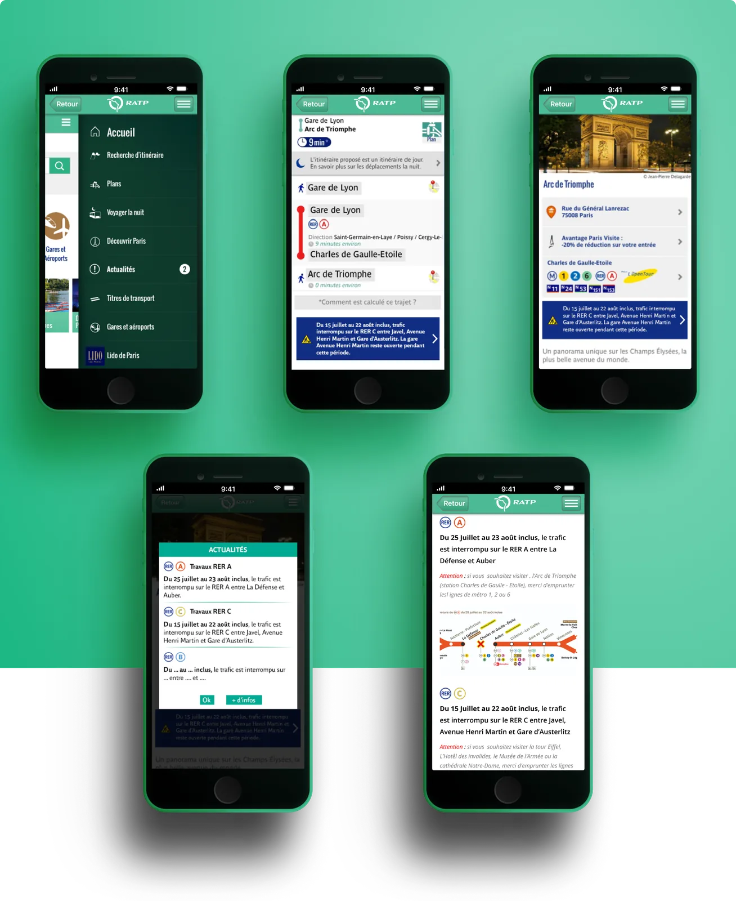

Restez informé pour voyager plus sereinement
Plus de 10 millions de personnes en France utilisent les transports de la RATP (bus, métro, RER, tramway) chaque jour.

La mission
En tant que designer d'expérience utilisateur, j'ai contribué à la création de l'application "Visiter Paris", dédiée aux voyageurs qui souhaitent explorer Paris et ses environs. Compte tenu des quelque 10 millions de voyageurs qui empruntent quotidiennement le réseau urbain RATP, il est essentiel de prendre en compte les perturbations parfois importantes dans les transports, sources de préoccupations pour les voyageurs. Notre objectif principal était de concevoir une expérience utilisateur apaisante à travers l'application, afin d'instaurer un sentiment de sérénité lors de leurs déplacements. Pour ce faire, nous avons mis en place des solutions pour anticiper les perturbations, fournir des informations en temps réel et rendre le voyage aussi agréable et fluide que possible.
Informer les voyageurs
Améliorer la sérénité
Mon rôle
J'ai été sollicité par la RATP pour concevoir des composants graphiques d'alerte, tout en respectant les directives préétablies et la charte graphique en place. Mon objectif était d'assurer une intégration harmonieuse de ces composants dans le contexte défini, en optimisant l'expérience utilisateur pour les utilisateurs finaux.
Tâches principales
- Exécution du design et validation
Design & Research Tool kit

IllustratorPlanning
Création des composants, puis coordination de l’intégration.

La solution
User interface — Mes messages
Exemples de messages d’alerte conçus pour l’application : « Du 25 juillet au 23 août inclus, le trafic est interrompu sur le RER A entre La Défense et Auber. Attention : si vous souhaitez visiter l’Arc de Triomphe (station Charles de Gaulle - Étoile), merci d’emprunter les lignes de métro 1, 2 ou 6. » — « Du 15 juillet au 22 août inclus, le trafic est interrompu sur le RER C entre Javel, Avenue Henri Martin et Gare d’Austerlitz. Attention : si vous souhaitez visiter la tour Eiffel, l’Hôtel des Invalides, le Musée de l’Armée ou la cathédrale Notre-Dame, merci d’emprunter les lignes de métro correspondantes. »

Les impacts
Depuis l’intégration des messages d’alertes il a été observé une amélioration de la satisfaction client de 17 % et 57 % d’entre eux ont précisé qu’ils voyagent plus sereinement avec des informations et alertes en temps réel lors de leurs déplacements.